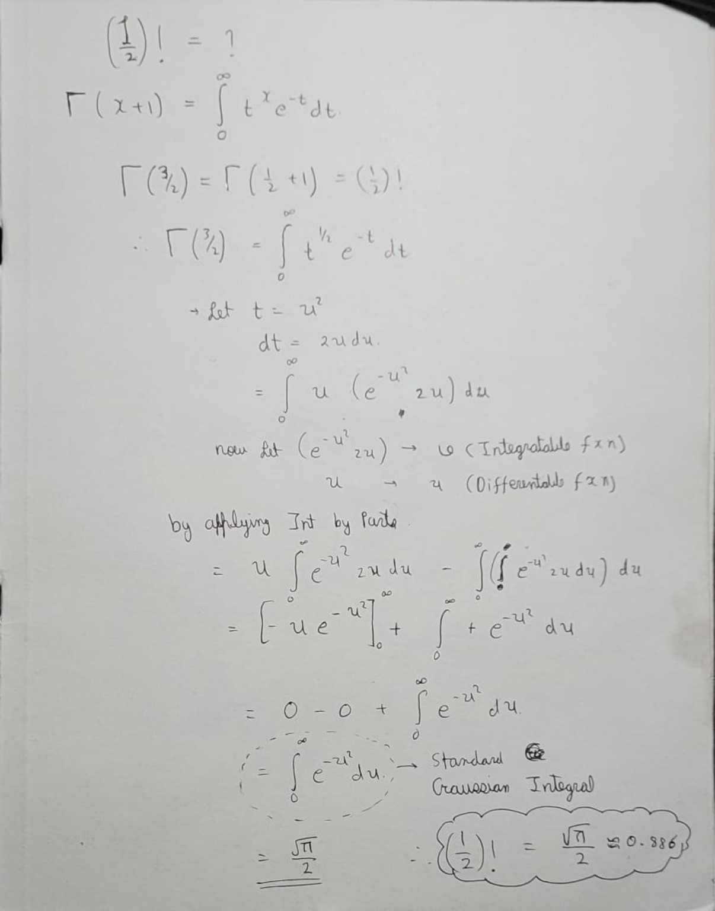

Mathematics · Reference
The Greek Alphabet
A reference sheet for symbols frequently used in mathematics and physics.
The next chapter of a Class 11 project
A growing science library about physics, astronomy, mathematics and the ideas we use to understand the universe — rebuilt as a fast, public, GitHub-ready site.
Start here
Choose a topic, read the original resource, then keep following the questions it creates.
Original resource library
These files are the original resources you provided. They are kept as PDFs rather than silently rewritten.
A reference sheet for symbols frequently used in mathematics and physics.
Your introductory quantum-mechanics resource, preserved in its original PDF form.
The larger quantum-mechanics PDF from your original collection.
A compact reference for constants used across physics.
Your original resource on the quantum phenomenon associated with black holes.
Your original states-of-matter PDF, preserved as a source resource.
Your original notes on different types and concepts of matter.
No resources match your search.
From the notebook
A personal science site should show the thinking behind the finished page.

Your handwritten derivation works through the substitution and integration leading to the standard Gaussian integral result.
The scan is preserved as an original note and can later be paired with a polished typed derivation.
Open notebook page →The story
Understanding The Universe began as a student project in Class 11. This rebuild keeps the original resources while giving them a cleaner public home.
The goal is simple: learn something, document it, question it, and keep improving the library.
— Khush Poshiya